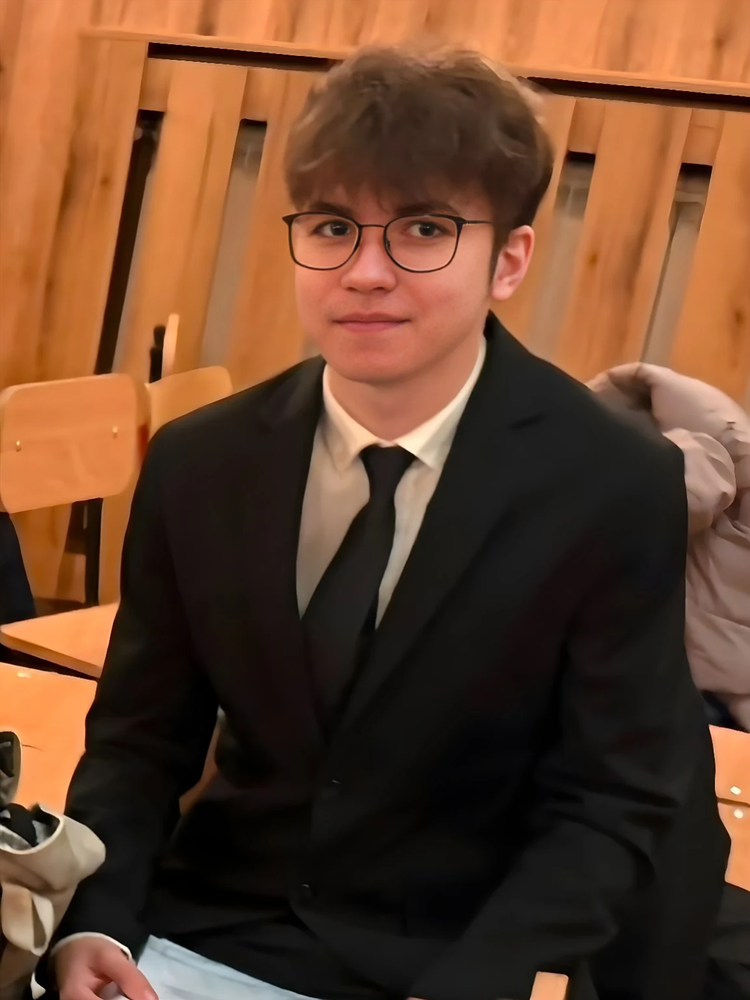

Argumentare
& public speaking
Dezbateri, competiții, discursuri și mentorat. Știu să construiesc un argument, dar și să ascult argumentul celuilalt.
OD Juniori · mentoringCandidatură CȘE · 2026
Ascultăm. Reprezentăm. Acționăm.
Cred că reprezentarea elevilor începe cu o idee simplă: să existe cineva care ascultă cu adevărat, înțelege problema și caută o cale concretă de a merge mai departe.

Colegiul Național
„Iulia Hasdeu”
Sunt Yannis, elev în clasa a IX-a E la Colegiul Național „Iulia Hasdeu”. Sunt pasionat de dezbateri, psihologie, comunicare, drepturile elevilor și proiecte care transformă ideile în lucruri concrete.
Am învățat din dezbateri să argumentez, din activitatea editorială să pun întrebările potrivite, din design să comunic clar, iar din voluntariatul de active listening să ascult fără să mă grăbesc să dau un răspuns.
Pentru mine, reprezentarea nu înseamnă să vorbești cel mai tare. Înseamnă să știi când să vorbești, când să asculți și când să cauți o soluție.
Nu vreau ca realizările mele să fie doar niște rânduri într-un CV. Vreau să fie abilități pe care le pot folosi pentru elevii din Hașdeu.
Dezbateri, competiții, discursuri și mentorat. Știu să construiesc un argument, dar și să ascult argumentul celuilalt.
OD Juniori · mentoring100+ conversații, 60+ ore de voluntariat și peste 9.200 de mesaje în experiența mea de active listening la 7 Cups.
7 Cups · Active ListenerExperiență editorială în Biroul de Presă al CMEB, cu cercetare și redactare pentru materiale despre viața și bunăstarea elevilor.
CMEB · Biroul de PresăSocial media, design grafic, branding și strategie de conținut. O idee bună trebuie și comunicată bine.
Future Justice InitiativeMă interesează drepturile tinerilor, participarea civică, etica și modul în care instituțiile pot răspunde mai bine oamenilor pe care îi reprezintă.
Redactor editorial, cu experiență în cercetare, redactare și comunicare. Am publicat inclusiv un material despre presiunea academică și bunăstarea elevilor.
Head Social Media Manager & Head Graphic Designer. Coordonez comunicarea vizuală și conținutul pentru proiecte de advocacy.
Competiții de debate și pregătirea altor elevi în argumentare, public speaking, feedback și teamwork.
Peste 100 de conversații și 60 de ore de voluntariat, cu accent pe ascultare activă și comunicare empatică.
Ai ceva de spus?
Un mecanism simplu prin care elevii pot spune ce nu funcționează, ce ar putea fi mai bine sau de ce au nevoie.
S.E.M.N. pornește de la o idee simplă: dacă reprezentăm elevii, trebuie să existe și un mod clar prin care elevii să ajungă la noi.
Transmiți o problemă, sugestie, nevoie sau întrebare.
Sesizarea este analizată și direcționată către cei care pot interveni.
CȘE acționează în limitele competențelor sale și facilitează comunicarea atunci când este nevoie.
Elevul poate solicita informații despre stadiul și progresul demersului.
Nu este un sistem de sancționare și nu este o anchetă disciplinară.
Este un mecanism de comunicare și reprezentare a elevilor.
Citește documentul integral pentru detalii despre funcționare, competențe și garanțiile propuse.
Deschide propunerea ↗Dacă elevii au ceva de spus, vreau să existe un loc unde acel lucru să poată fi auzit și să nu dispară pur și simplu.— Yannis-Gabriel Nacu
Înseamnă să îl asculți suficient de bine încât să poți duce mai departe ceea ce spune, fără să-i schimbi sensul.
Vreau ca un elev să poată veni cu o problemă fără să simtă că deranjează, să poată propune ceva fără să simtă că nu contează și să poată afla ce s-a întâmplat după ce a vorbit.
În final,
Candidez pentru că vreau să le căutăm împreună.